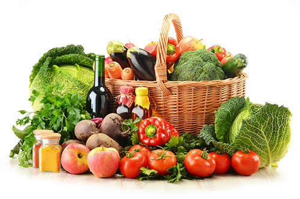

<!-- We don't need full layout here, because this page will be parsed with Ajax-->
<!-- Top Navbar-->
<div class="navbar">
  <div class="navbar-inner">
    <div class="left">
            <!-- Right link contains only icon - additional "icon-only" class-->
            <a href="#" class="link icon-only back show-menu"><i class="icon iconfont">&#xe615;</i></a>
          </div>
          <div class="center sliding">蔬菜</div>
  </div>
</div>
<div class="pages">
  <!-- Page, data-page contains page name-->
  <div data-page="menu1-1" class="page white-background">
    <div class="menur-box">
      <div class="menur-box-img"></div>
      <div class="menur-box-txt">
        <h2>蔬菜</h2>
        <p>为用户提供瓜果、根菜、叶菜、食用菌、豆类五大类蔬菜的供应信息。每种菜品除基本的信息外应注明其安全等级，即是否是有机蔬菜、绿色蔬菜、无公害蔬菜。</p>
      </div>
    </div>
  </div>
</div>